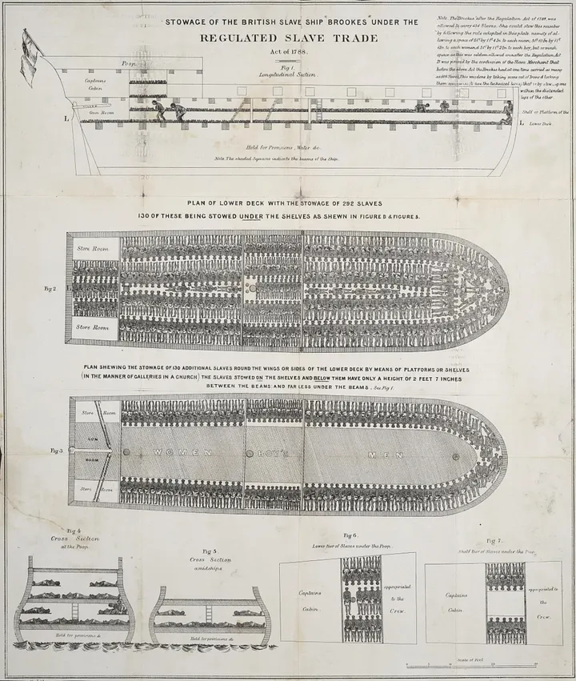
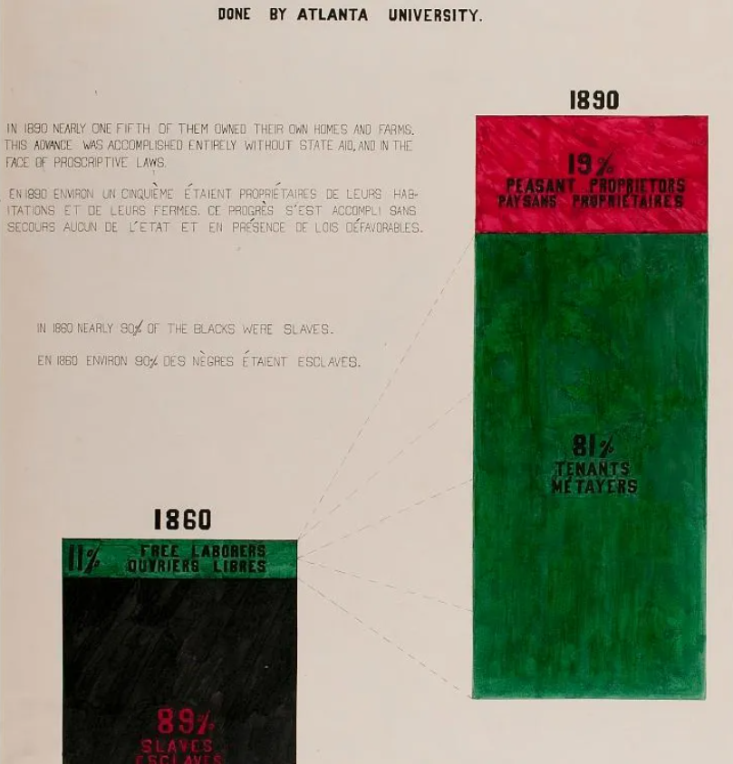
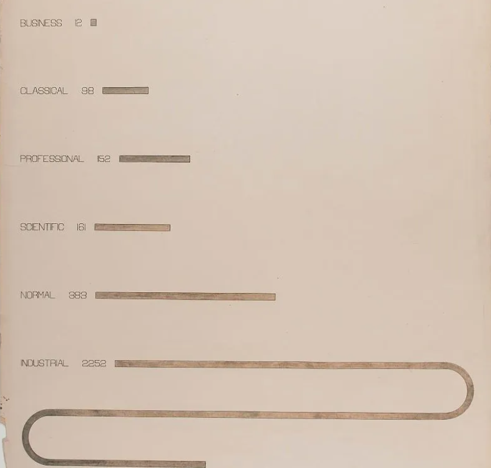

El barco Brooks y su forma de visualización de datos
El diagrama del barco Brooks fue concebido como una herramienta de activismo político radical. Los barcos de esclavos transportaron entre 11 y 12 millones de africanos a destinos en América del Norte y del Sur. Publicado originalmente en enero de 1789 por la Society for Effecting the Abolition of the Slave Trade (SEAST) en Londres, este impreso buscaba materializar una realidad que era invisible para la mayoría de la población británica: las condiciones infrahumanas del "Pasaje Medio". El grabado de Brookes data de después de la Ley de Comercio Regulado de Esclavos de 1788, pero aún muestra a africanos esclavizados encadenados en filas usando bilboes, que eran grilletes de hierro para las piernas que se usaban para encadenar parejas de personas esclavizadas durante el Pasaje Medio a lo largo de los siglos XVII y XVIII.

¿Qué problema intentaba resolver?
El diagrama del Barco Brooks permitió visibilizar cómo se realizaba el traslado hacinado de más de 450 esclavos, entre ellos hombres, mujeres y niños, Transformando datos técnicos en datos/evidencia visual que concientiza sobre la ineficacia de la ley Dolben que buscaba regularizar las condiciones de abordo en los barcos de esclavos.
¿Qué preguntas responde?
- Quién: Los cautivos africanos (454 hombres, mujeres y niños representados a escala) y la tripulación británica implícita en la gestión del espacio. Al barco de esclavos Brookes se le permitía transportar hasta 454 personas esclavizadas, asignando 6 pies (1,8 m) por 1 pie 4 pulgadas (0,41 m) a cada hombre; cada mujer medía 1,78 m por 0,41 m, y cada niño, 1,5 m por 0,36 m, pero un traficante de esclavos afirmó que, antes de 1788, el barco transportaba hasta 609 africanos esclavizados.
- Qué: El hacinamiento extremo y la deshumanización de personas tratadas como carga logística.
- Dónde: En las cubiertas del barco de Liverpool Brooks, durante el trayecto entre África y las Américas.
- Cuándo: Publicado en 1789, basado en mediciones parlamentarias tomadas poco antes de la Ley de Regulación del Comercio de Esclavos de 1788.
Análisis de la Información
Construcción social de poder
A pesar de que el diagrama transita por las cinco dimensiones, la información que predomina corresponde a una construcción social de poder, ya que su objetivo fue apelar a otras personas a apoyar el movimiento de abolición a la esclavitud por el medio del uso de una ilustración que reflejaba la realidad de las personas sometidas a la esclavitud. El diagrama utiliza mediciones técnicas y parlamentarias "reales" (datos), la forma en que se organizaron esos datos fue una decisión deliberada de la Society for Effecting the Abolition of the Slave Trade (SEAST). Los abolicionistas seleccionaron el Brooks no porque fuera el único barco, sino porque representaba el límite de la "legalidad" de la época para demostrar que, incluso siguiendo la ley (Ley de Regulación del Comercio de Esclavos de 1788), la realidad era una atrocidad.
Análisis Técnico
Los datos que contiene el diagrama están relacionados al origen racial y las estaturas de las personas esclavas, esto último para poder diferenciarlos entre hombres, mujeres y niños, siendo Datos Sensibles en la ley chilena 19.628 - Sobre Protección de la Vida Privada, sin embargo esta información se ve reducida a números con tal de poder impactar y concientizar en las personas sobre el traslado de esclavos.
El legado
El legado en la manera de visualizar la información que nos proporciona este diagrama tiene más que ver con el dato como una representación de la “carga humana” hacia visualización que denuncian sistemas de opresión y explotación de alta complejidad. Bajo este modo de visualización que dejó el diagrama de Brooks, encontramos 2 casos contemporáneos.
W.E.B DuBois y sus Infografías
 |
 |
Realizadas para la exposición de parís de 1900, utilizan los datos para mostrar la reducción de los seres humanos a un “espacio de carga” de la sociedad, Du Bois utilizó espirales de datos, gráficos de barras y mapas para demostrar la humanidad y el progreso de los afroamericanos a pesar de la opresión que enfrentaban. Además Du Bois entendía que los datos no eran neutrales. Al igual que los abolicionistas usaron el plano del Brooks para combatir una narrativa pro-esclavista, Du Bois visualizó datos de propiedad de tierras y alfabetización para destruir el mito de la "inferioridad" racial.
Anatomía de un sistema de IA
Creada en el 2018, Anatomy of an AI system consiste en una infografía que explora el trabajo detrás de los sistemas de inteligencia artificial, revelando cadenas de explotación tanto humana como ambiental que parecieran invisibles en nuestra vida cotidiana. Al igual que el diagrama de Brooks, es por medio del detalle que el observador puede darse cuenta de la explotación realizada. Ambas exponen la lógica desinteresada por el bienestar humano con el fin de generar ganancias, los mineros del congo son presentados como simples nodos de una cadena mayor, los esclavos son despojados de su humanidad con tal de maximizar cuantos puedan caber en un barco, los diagramas los representan como algo pequeño e insignificante, sirviendo como impacto para el espectador.